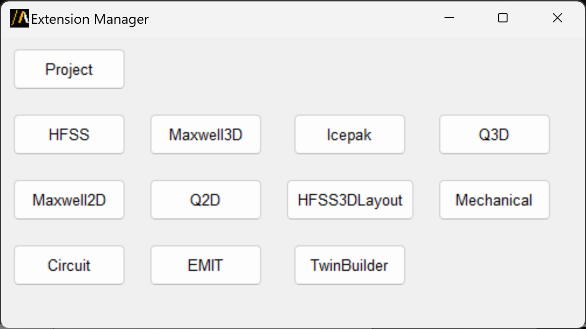
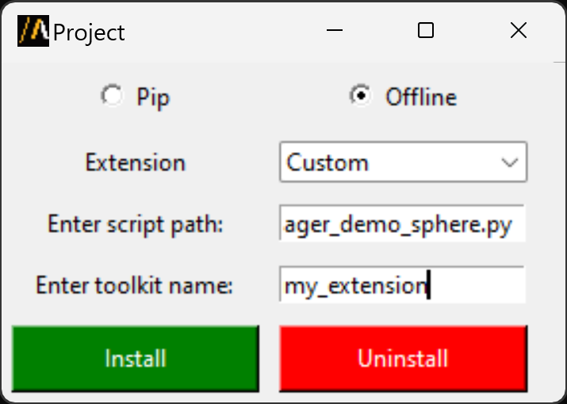
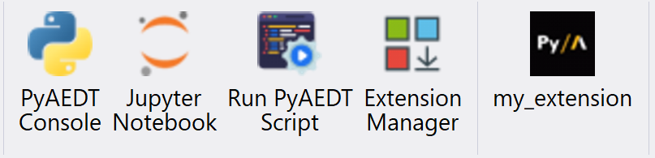

Extension manager#
Extensions provide a simplified interface to perform automated workflows in AEDT, they are generally tool-specific and are therefore only accessible given the appropriate context. In AEDT, you can use the Extension manager to add or remove extensions. The Extension manager allows the user to install three different types of extensions:
Pre-installed extensions available at project level.
Open source PyAEDT toolkits available at application level.
Custom extensions installable both at project and application level.
The following sections provide further clarification.
You can launch extensions in standalone mode from the console or a Python script.
Pre-installed extensions#
Project extensions#
Pre-installed extensions are available at project level so they are available for all AEDT applications. They are small automated workflow with a simple UI.
Import a Nastran or STL file in any 3D modeler application.
Configure layout for PCB & package analysis.
Lear how to use the Advanced Fields Calculator extension.
Lear how to convert projects from 2022R2 to newer versions.
HFSS 3D Layout extensions#
Pre-installed extensions are available at HFSS 3D Layout level. They are small automated workflow with a simple UI.
Parametrize a full layout design.
Generate arbitrary wave ports in HFSS.
HFSS extensions#
Pre-installed extensions are available at HFSS level. They are small automated workflow with a simple UI.
Design a choke and import it in HFSS.
Icepak extensions#
Pre-installed extensions are available at Icepak level. They are small automated workflow with a simple UI.
Import a CSV file containing sources layout and power dissipation information.
Open source toolkits#
Open source toolkits are available at application level. They are advanced workflows where backend and frontend are split. They are also fully documented and tested.
Here are some links to existing toolkits: - Hfss: Antenna Wizard. - Maxwell 3D: Magnet Segmentation Wizard.
Custom extensions#
Custom extensions are custom workflows (Python script) that can be installed both at project and application level. From the Extension manager select the target destination:
{kind=link}
Select Custom as the extension type. Provide the path of the Python script containing the workflow. Enter the extension name. This is the name that appears beneath the button in the Automation tab after a successful installation.
{kind=link}
After the normal completion of the installation a new button appears:
{kind=link}
The example below is a simple example of custom extension. The Python script requires a common initial part to define the port and the version of the AEDT session to connect to.
import ansys.aedt.core
import os
# common part
if "PYAEDT_SCRIPT_PORT" in os.environ and "PYAEDT_SCRIPT_VERSION" in os.environ:
port = os.environ["PYAEDT_SCRIPT_PORT"]
version = os.environ["PYAEDT_SCRIPT_VERSION"]
else:
port = 0
version = "2024.2"
# your pyaedt script
app = ansys.aedt.core.Desktop(new_desktop_session=False, specified_version=version, port=port)
active_project = app.active_project()
active_design = app.active_design(active_project)
# no need to hardcode you application but get_pyaedt_app will detect it for you
aedtapp = ansys.aedt.core.get_pyaedt_app(design_name=active_design.GetName(), desktop=app)
# your workflow
aedtapp.modeler.create_sphere([0, 0, 0], 20)
app.release_desktop(False, False)